O 1º conjunto de números que se aprende é o Conjunto de Números Naturais.
Um sistema de numeração serve para representar números. O sistema utilizado no cotidiano humano é o Sistema de Numeração Decimal.
Como comparação, o Sistema de Numeração Binário é utilizado em computadores e lógica digital.
⚠️ Atenção: Algarismo não é número. Não são a mesma coisa.
Exemplo: 11.772.026
* Nota: O zero à esquerda não tem valor posicional e não entra na contagem de algarismos.
🔹 Valor Relativo: É o mesmo que valor posicional.
🔸 Valor Absoluto: É o mesmo que o próprio algarismo.
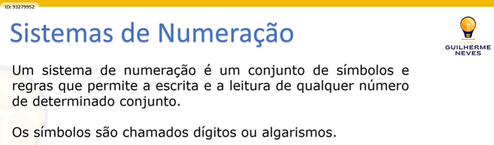
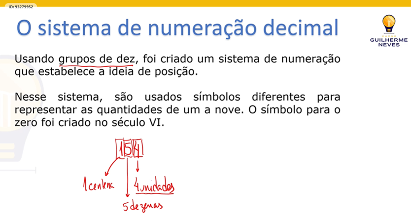
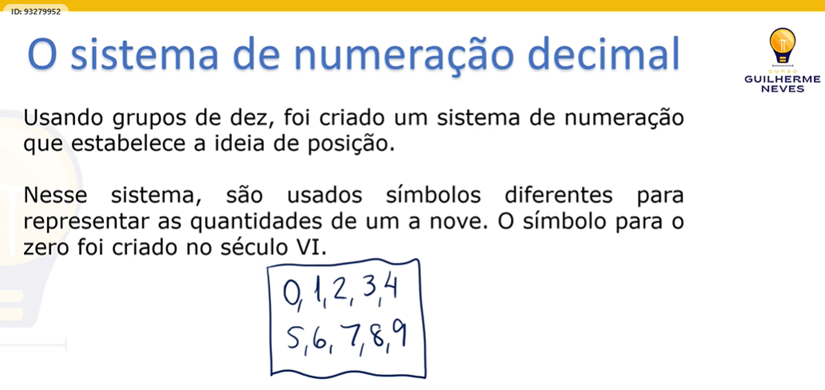
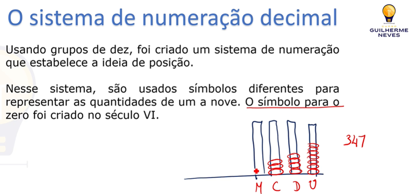
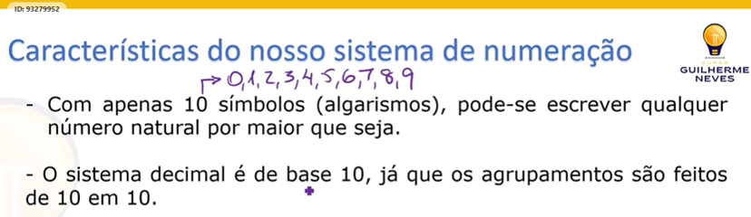
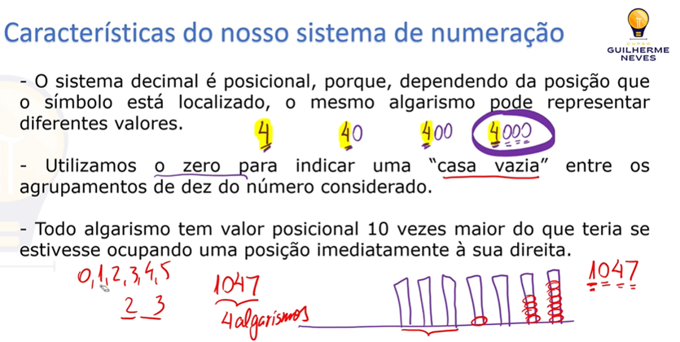
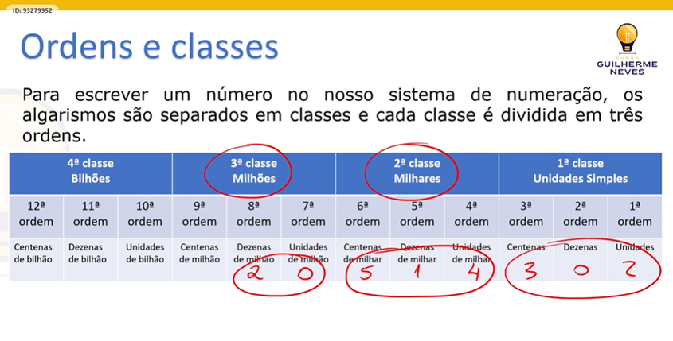
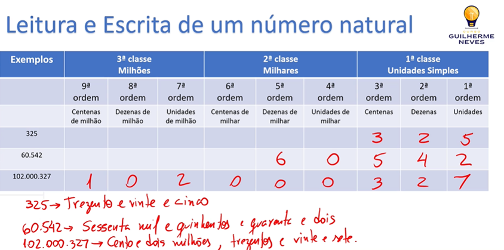
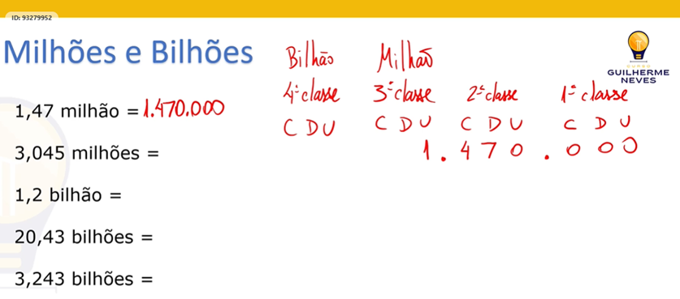
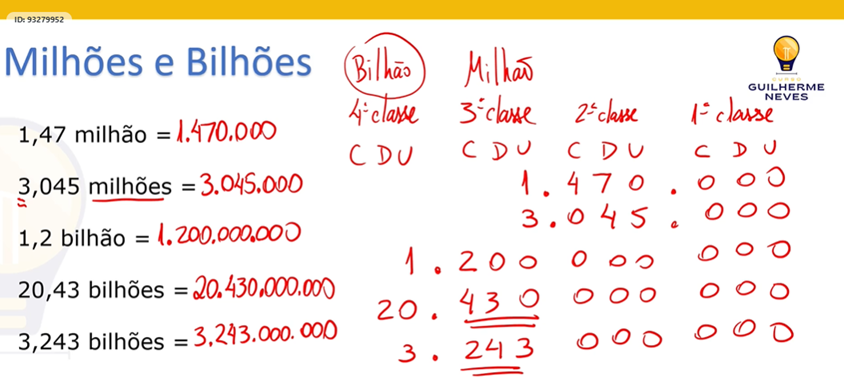
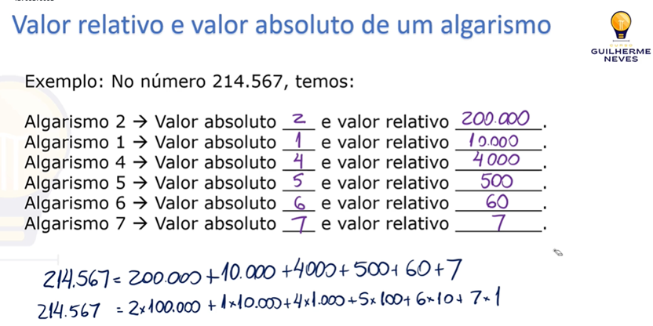